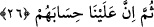

bundan önce de “men”in lafzı göz önüne alınarak zamir tekil getirilmişti.
26. Sonra onların sorguya çekilmesi de sâdece bize âiddir.
“Sonra onların” mahşerde “sorguya çekilmesi de” Biz’den başkasına değil “sâdece
Biz’e âiddir.” Onların niyetlerine, amellerine dâir bir hurma çekirdeğinin çukuru veya
zarı kadar da olsa amellerine, niyetlerine karşılık hesaba çekmek sâdece Biz’e âiddir.
Âyette yer alan “sümme/sonra” kelimesi “zamanda” değil “rütbe, mertebe”de bir
öncelik-sonralık ifâde etmektedir. Çünkü zaman açısından öncelik-sonralık onların
Allah’a dönmeleri ile hesaba çekilmeleri arasındadır yoksa Allah Teâlâ’ya dönmeleri
ile Allah’ın onlara hesaba çekmesi arasında zaman açısından bir öncelik ve sonralık
yoktur. Zira bu ikisi sürüp giden sürekli bir durumdur.
Ebûbekir b. Tâhir (rh) bu âyeti şöyle anlıyor: Onların dönüşü sâdece Biz’edir. Bu
fazilette böyledir. Onları hesaba çekmek Biz’e âiddir, bu da adâlettedir.
Baklî (rh) şöyle der: Allah Teâlâ bu âyet-i kerimede onların dönüş yerlerini kendi
nefsi kılarak, onları hesaba çekmeyi kendisi üstlenerek, onlara nasıl da bir fazilet
veriyor. Şu halde kula düşen bu iki faziletle birlikte iki dünyada en güzel hayatı
sürdürmek, bu iki müjdeyle sevinçten uçmaktır.
Fakir (Bursevî)’in kanâatine göre Baklî’nin söylemiş olduğu ifâde âriflerin mükaşefe
yoluyla tatmış oldukları bir gerçektir. Şu halde âriflik mertebesine ermemiş sıradan
insanların bu sözlerle kendini aldatmaması gerekir. Çünkü Hz. Ömer Efendimiz şöyle
der: “Hesaba çekilmeden önce nefsinizi hesaba çekiniz. Amelleriniz tartılmadan önce
onu tartınız. Allah’a sunulacak en büyük arz/takdim ve sunuş için süsleniniz. Çünkü
Allah şöyle buyurur: “(Ey insanlar!) O gün (hesab için) huzura alınırsınız, hiçbir
sırrınız gizli kalmaz” (Hakka, 69/18) Dünyada iken nefislerini hesaba çeken
kimselerin orada hesapları hafif olur. Dünyada iken nefislerini tartan kimselerin âhirette
terazileri ağır basar.”
Nefis muhasebesi “vera’/takvâ” ile olur. Nefsin tartılması ise aynel yakîn müşâhedesi
ile, en büyük arz için süslenme ise en büyük melik, hükümdar/Allah korkusuyla
gerçekleşir.
Hz. Ali’den (r.a.) şöyle bir öğüt naklederler: “Kişi, kaderinde elde edeceği yazıldığı
ve bundan dolayı elde ettiği şeye sevinir. İnsan kaderinde elde edemeyeceği yazıldığı ve
bundan dolayı eline geçiremediği şeye üzülür. Dünyada eline geçen şeyden dolayı çok
sevinme, kaybettiğin şeylerin ardından esefle yanma. Senin bütün sevincin buradan
gönderdiğin amellerinden dolayı, bütün esef ve üzüntün de seni âhiretinden alıkoyan
şeyler için olsun. Bütün meşguliyet ve tasanı âhiretine ve öldükten sonraya çevir.”
Bir hadiste şöyle denir: “Üç özellik vardır ki bunlar kimde bulunursa o kişinin